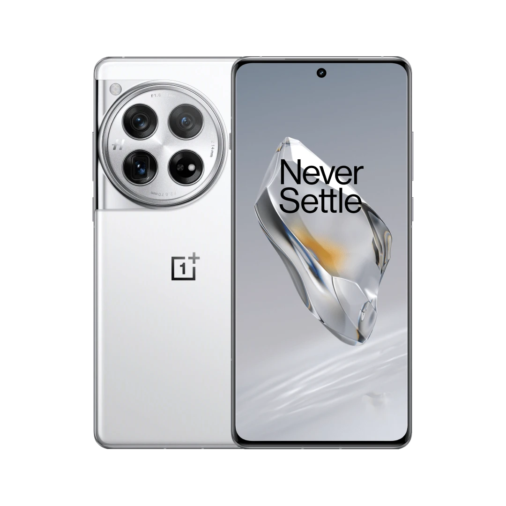
Экран
4500 нит
Экран 6,82 дюйма с разрешением 2K. В пике он светит на 4500 нит: когда OnePlus 12 вышел, ярче не было ни у одного телефона.
- 6,82дюйма
- 120Гц
- 510точек на дюйм
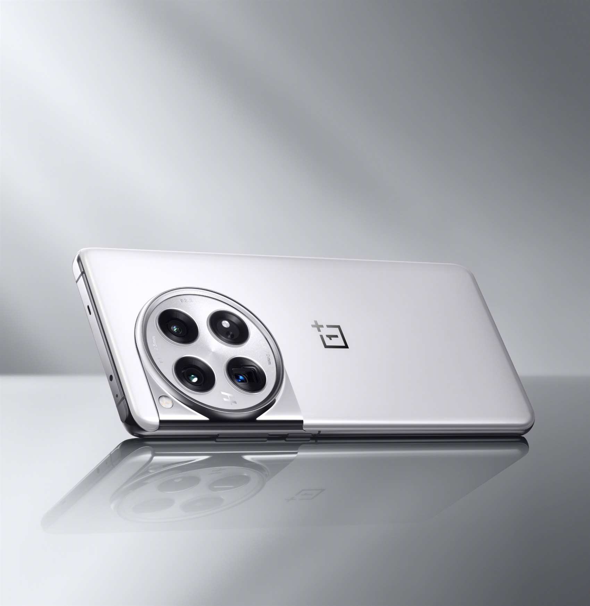
Цвет Glacial White
Белый, как ледник
Стекло изогнуто с обеих сторон, а рамка и кольцо вокруг камер отполированы до зеркала. Ни одной лишней линии.
- 9,15мм толщина
- 220граммов
- IP65защита от воды
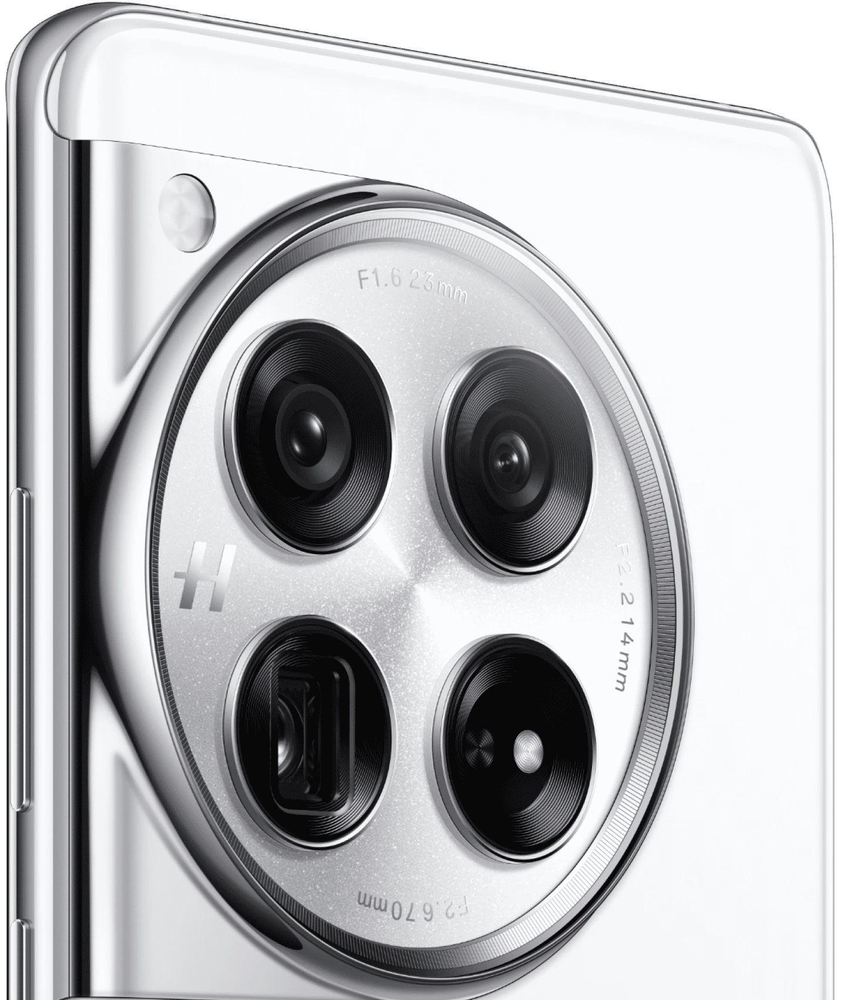
Камера Hasselblad
Камера в круге
- 50 МпГлавная камера: сенсор Sony LYT-808 и оптическая стабилизация.
- 64 МпПерископ: приближает в 3 раза без потери качества.
- 48 МпСверхширокая камера с углом 114°: в кадр входит вся комната.
Снято на OnePlus 12
Цвета Hasselblad
Официальные снимки OnePlus, сделанные на этот телефон. Листай дальше — лента поедет в сторону.
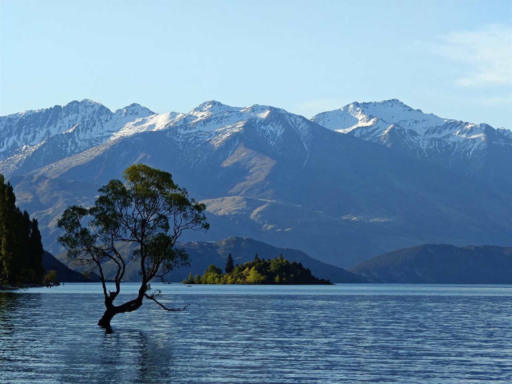
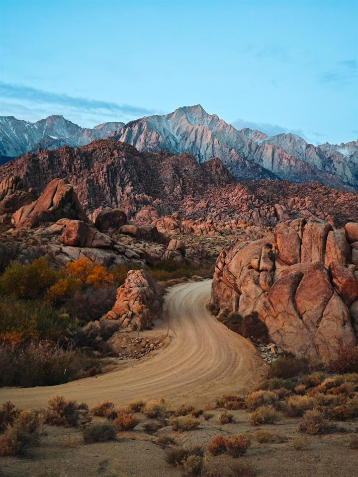
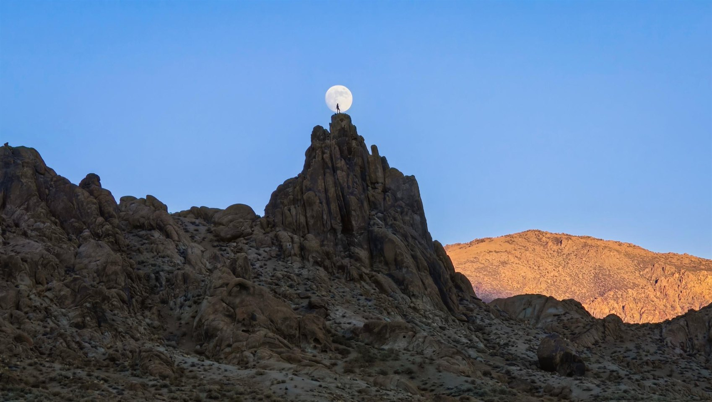
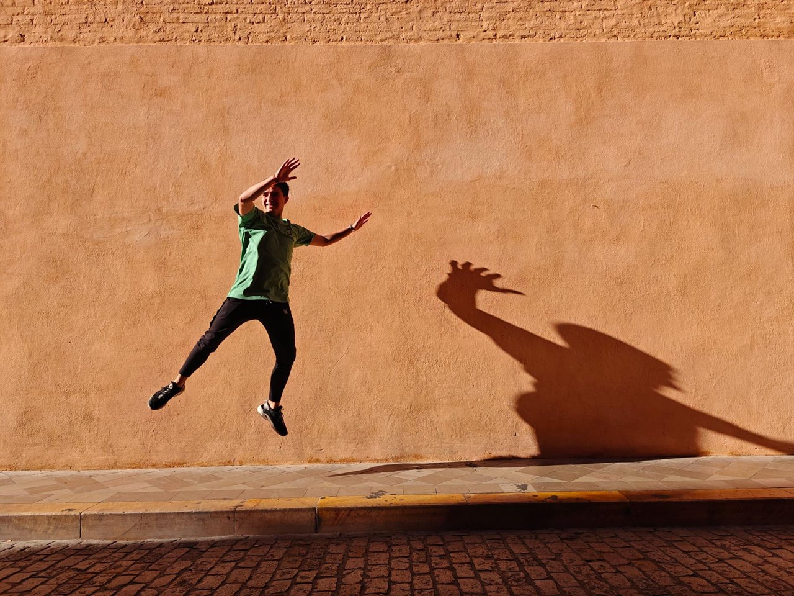
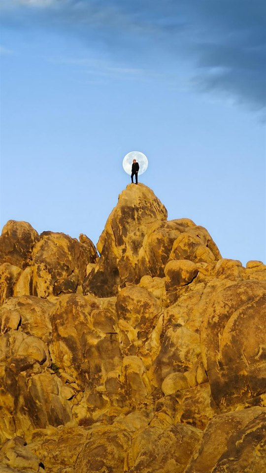
Разбор
Разобран по слоям
- В сбореВсе слои сложены в корпус толщиной 9,15 мм.
- 10 слоёвЭкран, рамка, плата и батарея. Между ними — две медные пластины.
- 9140 мм²Площадь двух испарительных камер. Они забирают тепло у процессора и разводят его по корпусу.
Внутри
Мощность, которой не видно
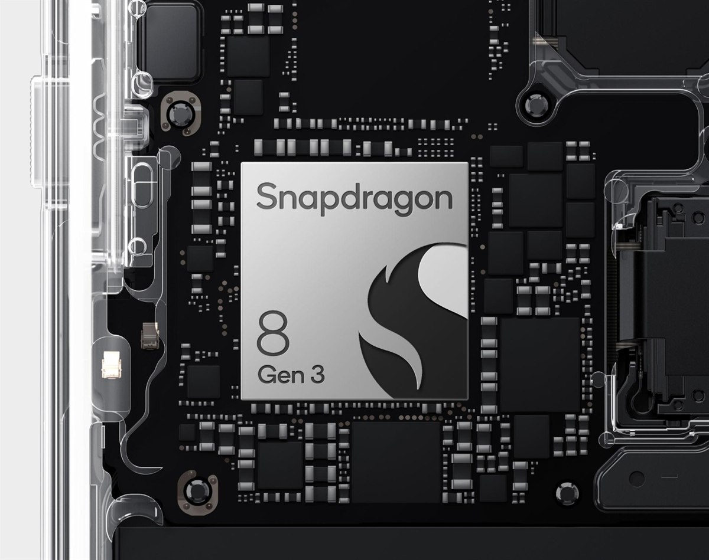
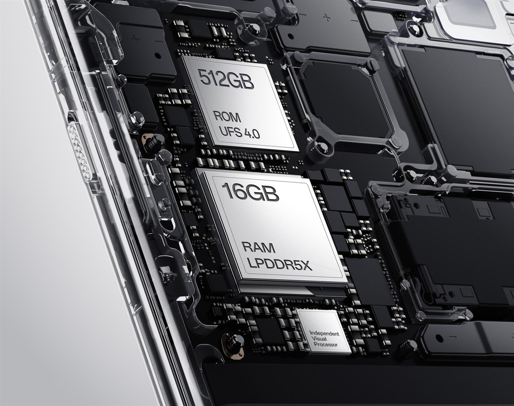
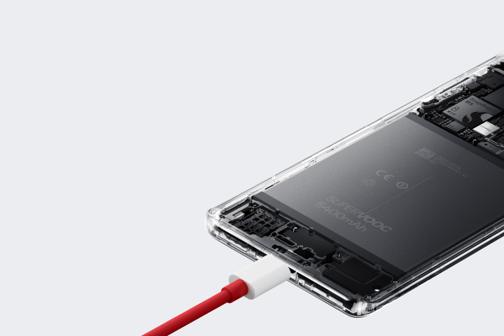
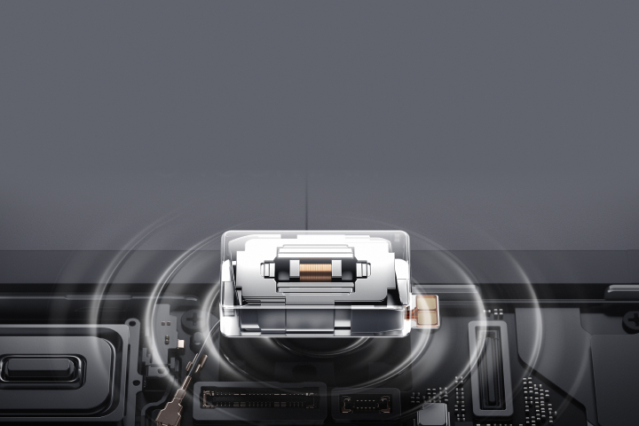
В цифрах